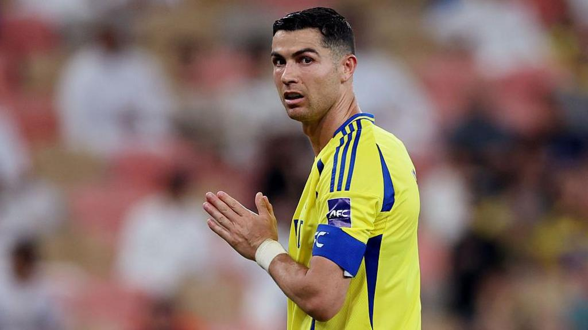

Auch heute – mehr als 20 Jahre nach seinem Profi-Debüt – gehört Cristiano Ronaldo immer noch zu den bekanntesten Persönlichkeiten der Welt. Seit 2022 spielt er beim saudi-arabischen Klub Al-Nassr, wo er weiterhin Tore erzielt, Zuschauer begeistert und das sportliche Niveau der Liga steigert.
Abseits des Fussballplatzes ist Ronaldo ein erfolgreicher Geschäftsmann. Er besitzt zahlreiche Unternehmen – darunter Hotels (Pestana CR7), eine eigene Modelinie, Parfüms und Fitnessstudios. Seine Marke „CR7“ ist weltweit bekannt. Ronaldo nutzt seine Popularität ausserdem für soziale Zwecke: Er unterstützt Kinderhilfswerke, spendet regelmässig für medizinische Einrichtungen und spricht sich offen für wichtige gesellschaftliche Themen aus.
In den sozialen Medien ist Ronaldo die meistgefolgte Person der Welt – mit über 600 Millionen Followern allein auf Instagram (Stand 2025). Er teilt dort Einblicke in sein Familienleben, sein Training, seine Reisen und seine beruflichen Projekte.
Privat lebt er mit seiner Partnerin Georgina Rodríguez und seinen fünf Kindern. Trotz seines Reichtums und Ruhms zeigt er sich häufig bodenständig, diszipliniert und motivierend. Er gilt als Vorbild für Millionen junge Menschen weltweit. Sein Motto „Träume gross und arbeite hart“ hat vielen Mut gemacht, an sich selbst zu glauben.
